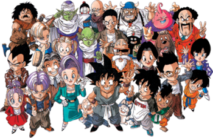

Dragon Ball is a Japanese media franchise created by Akira Toriyama in 1984. The initial manga, written and illustrated by Toriyama, was serialized in Weekly Shōnen Jump from 1984 to 1995, with the 519 individual chapters collected in 42 tankōbon volumes by its publisher Shueisha. Dragon Ball was originally inspired by the classical 16th-century Chinese novel Journey to the West, combined with elements of Hong Kong martial arts films. Dragon Ball characters also use a variety of East Asian martial arts styles, including karate and Wing Chun (kung fu). The series follows the adventures of protagonist Son Goku from his childhood through adulthood as he trains in martial arts. He spends his childhood far from civilization until he meets a teen girl named Bulma, who encourages him to join her quest in exploring the world in search of the seven orbs known as the Dragon Balls, which summon a wish-granting dragon when gathered. Along his journey, Goku makes several other friends, becomes a family man, discovers his alien heritage, and battles a wide variety of villains, many of whom also seek the Dragon Balls.
Toriyama's manga was adapted and divided into two anime series produced by Toei Animation: Dragon Ball and Dragon Ball Z, which together were broadcast in Japan from 1986 to 1996. Additionally, the studio has developed 21 animated feature films and three television specials, as well as an anime sequel series titled Dragon Ball GT (1996–1997) and an anime midquel series titled Dragon Ball Super (2015–2018). From 2009 to 2015, a revised version of Dragon Ball Z aired in Japan under the title Dragon Ball Kai, as a recut that follows the manga's story more faithfully by removing most of the material featured exclusively in the anime. Several companies have developed various types of merchandise based on the series leading to a large media franchise that includes films (both animated and live-action), collectible trading card games, action figures, collections of soundtracks, and numerous video games. Dragon Ball has become one of the highest-grossing media franchises of all time.
Since its release, Dragon Ball has become one of the most successful manga and anime series of all time, with the manga sold in over 40 countries and the anime broadcast in more than 80 countries. The manga's 42 collected tankōbon volumes have over 160 million copies sold in Japan and 260 million copies sold worldwide, making it one of the best-selling manga series of all time. Reviewers have praised the art, characterization, and humor of the story. It is widely regarded as one of the greatest and most influential manga series ever made, with many manga artists citing Dragon Ball as a source of inspiration for their own now-popular works. The anime, particularly Dragon Ball Z, is also highly popular around the world and is considered one of the most influential in boosting the popularity of Japanese animation in Western culture. It has had a considerable impact on global popular culture, referenced by and inspiring numerous artists, athletes, celebrities, filmmakers, musicians, and writers around the world